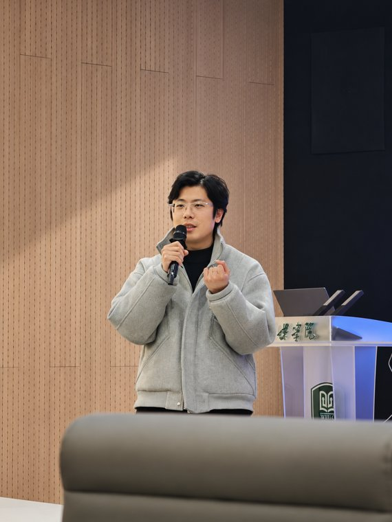
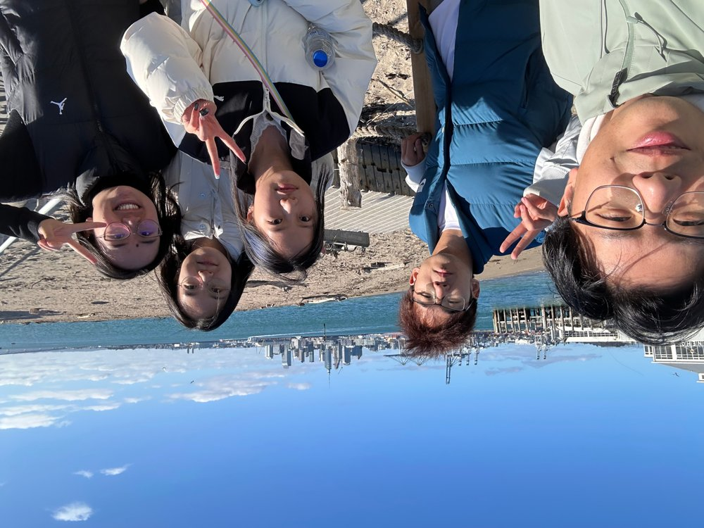

PhD in Computer Science
University of Auckland · Supervisor: Jiamou Liu
AI-based ECG analysis, multi-vessel coronary ischemia and fractional flow reserve prediction.
Auckland, New Zealand
AI researcher, builder & educator.
I explore how intelligent systems can reason with evidence, solve real problems and support human growth. My work moves between academic research, hands-on engineering and the communities we build around them.
PhD researcher · University of Auckland
Civilised Agent Lab · ORCID · GitHub

I like defining the problem before choosing the solution.
When I take on a task, I start by asking what we actually want to understand and what result would change our next decision. I enjoy bringing methods from one discipline into another, from cognitive psychology to machine learning and from research to everyday software.
When something fails, I trace the process back, isolate a likely bottleneck and test a change against the same material. In collaboration, I care about clear responsibilities and practical outcomes. I am especially drawn to turning ambiguous requirements into systems people can use.
Based in Auckland, I hope to meet collaborators through research, teaching and community work. Psychology and personal growth are an important part of my interests alongside AI.
University of Auckland · Supervisor: Jiamou Liu
AI-based ECG analysis, multi-vessel coronary ischemia and fractional flow reserve prediction.
University of Auckland · First Class Honours · Thesis A+
Machine learning, large-scale data algorithms, data mining and software development.
Shandong University of Technology · Software development and systems design.
Vellore Institute of Technology, India.
Connecting learned representations, explicit knowledge and human judgment.
My PhD examines AI-based ECG analysis for multi-vessel coronary ischemia detection and FFR prediction. I am exploring how to audit whether ECG models depend on guideline-defined diagnostic evidence, using explicit rules and controlled evidence changes.
Value expression, evidence-grounded debate generation and the reliability of automated peer review.
Prototype-guided personality inference and consistency in visual storytelling.
Connecting transaction networks, market signals and online discussion for behaviour and price forecasting.

Reviewer for ARR, AAMAS and Information Fusion; volunteer at AAMAS 2024; research visit to the University of Electronic Science and Technology of China in 2024.
Published papers and public preprints, with contributions and links.
Publication status is based on my November 2026 professional record. Papers under anonymous review are not listed here.
I design around the real workflow first, then decide which steps need software, model reasoning or human judgment.
Estimated processing time of the old workflow, compared with an actual run of the redesigned pipeline on the same batch of documents.
Independently built an OCR-to-Markdown processing pipeline with document-specific skills, parallel extraction, vector retrieval and source-linked Q&A for a lawyer.
A cross-industry study of 102 AI applications, grouped into 16 business categories, six implementation patterns and a seven-step methodology.
Explore the atlas ↗Designed an Obsidian knowledge base with a remotely accessible Hermes assistant via Telegram. The prototype supports reusable knowledge and content creation; ingestion workflows are being refined.
Built multi-source datasets and benchmark infrastructure for 300 million+ Ethereum transactions and 3,880 token profiles. First author of the WWW 2026 short paper.
Read the paper ↗Designed and deployed temporal graph neural networks for modelling investor behaviour and risk scoring. The project modelled more than a million users and was later paused.
Project repository ↗Translated coaching experience into reusable AI guidance, post-session review and automated video clipping. Built a chat interface for ongoing questions and review.
More about ChanCard ↓SWA social media workspace — scoped a phased content management, scheduling and workspace solution.
Horizon Youth grouping system — designed registration and manual grouping workflows.
Social content assistant — explored mobile publishing handoff and photo-to-content generation.
Medical travel services — contributed to business planning.
Understanding people matters as much as understanding systems.
My interest in psychology began at university through an apprenticeship with the founder of Time Line. I studied psychoanalytic ideas, observed guided sessions and explored reflective and relaxation practices.
In late 2025, I founded ChanCard, a personal-growth project using symbolic cards as prompts for open-ended reflection. The aim is to help people examine their own experiences and choices, not to make clinical diagnoses or promise predictions.
This interest also shapes my academic work, including prototype theory for personality inference and research into personality consistency in visual storytelling.
Become the person who can support your own growth.
Self-understanding, independence and personal responsibility.
Making AI accessible through teaching, conversation and hands-on experimentation.

Co-organiser and AI speaker at Horizon Youth. By November 2026, the weekly AI series had reached its 15th session; the wider community had hosted 30+ events with an estimated 400+ cumulative attendances.
Topics include model literacy, ChatGPT and Codex, vibe coding, AI ethics, marketing and product delivery.

Nominated participant at the week-long forum at New Zealand Parliament; spoke about research and culturally grounded generative AI.

Co-designed and taught adult courses on practical AI, knowledge bases, agents and workflow automation.


Research, teaching, product delivery and independent entrepreneurship.
Co-design and deliver AI courses and workshops, and contribute to client-facing digital solutions and applied AI projects.
Document intelligence, personal knowledge systems, workflow design and hands-on implementation.
Designed and supervised short research projects for visiting students, typically 3–5 per cohort. In 2026, the supervised group won first prize in its programme.
Assessed weekly assignments and provided feedback to approximately 40 undergraduate students.
Delivered small custom websites and business systems, including a hotel beverage inventory application. Learned first-hand about client discovery, pricing and sustainable delivery.
I'm interested in research collaborations, applied AI projects, education and conversations that bring different perspectives together.
Email me ↗